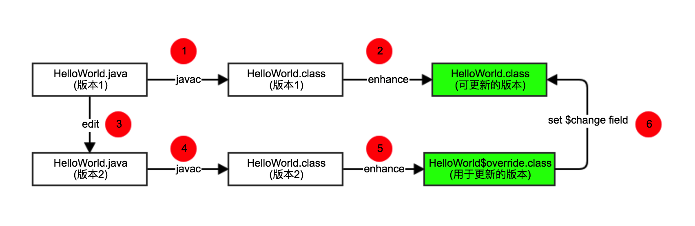
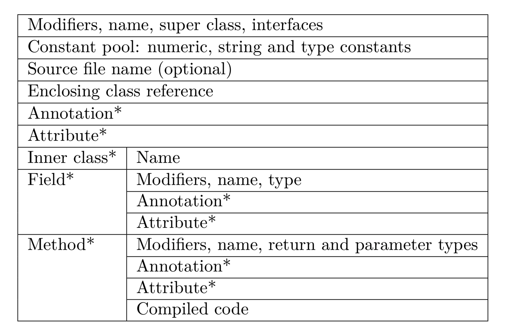
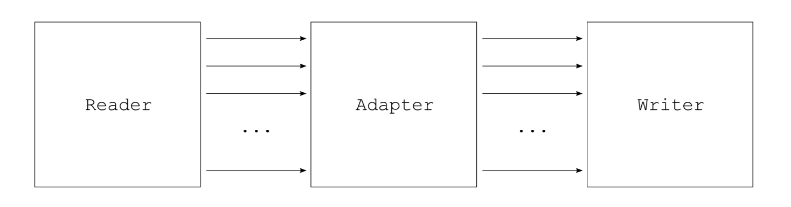
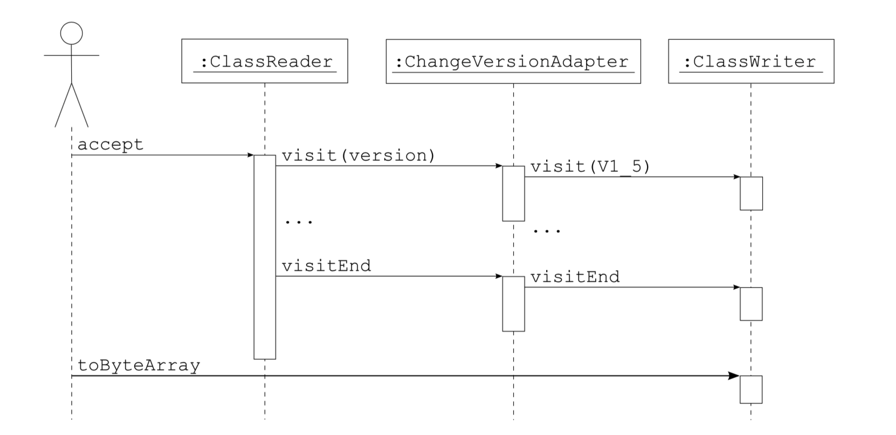
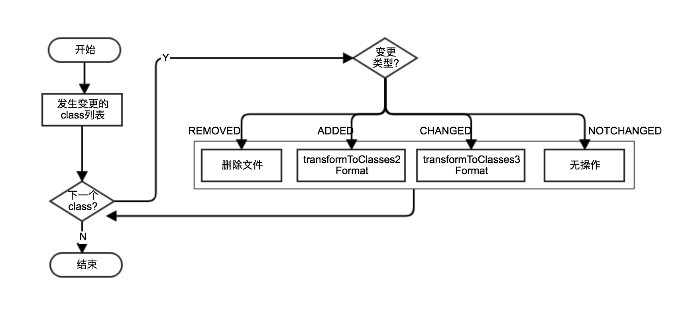
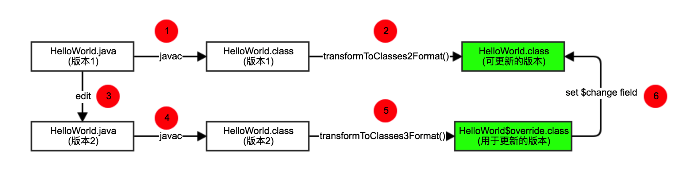

从使用体验上讲，Instant Run加快了开发效率，相当高大上。从技术上讲，其涉及到的技术点比较多，初看神秘又复杂。不过个人觉得Instant Run的复杂性主要在于工程实现，略过这种复杂性后聚焦其背后原理，会发现它还是非常简单明了的。前一篇中我们分析了Instant Run的流程，在此基础上再来看看Instant Run的原理。
本文的主要参考资料是：
- instant-run - 官方关于Instant Run实现目标和技术选型的介绍
- instant-run-instrumentation - 官方关于Instant Run插桩技术介绍
我的博客中有这两篇文章的翻译，供参考：
看完上面两篇官方文档，你应该基本能明白Instant Run的原理。如果是这样的话，你可以直接忽略接下来的内容。不过为了检验一下自己是否真的有明白Instant Run，我还是要接着往下写。
首先，Instant Run的核心原理可以概括成以下两点：
- Delegation pattern，代理模式
- Instrumentation - Java插桩技术
接下来分别就这两点展开讨论。
代理模式
你会疑惑Instant Run怎么能跟代理模式扯上关系，是不是搞错了？但相信我没错。
instant-run-instrumentation中指出：Instant Run为了规避Java类加载带来本身的限制带来的一些技术问题，并不玩classloader相关的黑科技，而是用了另外一个简单粗暴的方法(原文只说简单，粗暴是个人观点)。这里用Instant Run版本的HelloWorld作为例子来演示一下这个方法是如何简单粗暴。
假设你有个HelloWorld类：
1 | // 版本1 |
你会发现HelloWorld有个问题，它不具备”更新能力”。现在各种app都流行热修复啊，对不对？我们的HelloWorld不能更新不能热修那怎么行，万一有bug怎么办？
好吧，为了让其具备更新能力，代码改成这样：
1 | public class HelloWorld { |
你可能会好奇这里的IncrementalChange是什么，请暂且放一放不和它纠结，它并不影响我们对以上代码的理解。这些代码含义很清晰：
- 如果
$change字段没被设置，代码逻辑没变化 - 如果
$change字段有被设置(被设置成HelloWorld$override实例，后面会提到)，执行更新/修复后的逻辑
简单来说，HelloWorld现在具备更新能力了！现在需求变了，这回我们的HelloWorld不说”hello”要说”你好”，代码改成这样：
1 | // 版本2 |
但是修改后的HelloWorld如何跟修改前的HelloWorld联系起来呢？这里用一张图来说明：

(特别需要注意的是， 上图中绿框表示的类文件才被真正被打包到APK中 )
HelloWorld$override实现了IncrementalChange接口，可被设置到$change字段。其代码如下：
1 | public class HelloWorld$override implements IncrementalChange { |
以上就是Instant Run的核心原理。但有几个问题需要考虑：
- 第2步的enhance过程 - 如何 自动修改 版本1的
HelloWorld让其具备更新能力？ - 第5步的enhance过程 - 如何 自动修改 版本2的
HelloWorld生成用于更新的版本？ - 第6步 - 如何设置
$change字段
本文只讨论前两个问题，它们本质上是同一个问题：我们不可能通过手工修改Java源文件的方式去实现Instant Run，而要借助Java插桩技术自动修改Java类文件。
插桩技术
instrumentation，这个词指的应该是获取计算机软件或者硬件状态的数据的技术，一般翻译为插桩。字面意思理解起来有困难的话，可以这样考虑：
- 你只管动手写版本1的
HelloWorld.java。但是构建时有个家伙默默地帮你修改HelloWorld让其具备更新能力(第2步enhance过程，初始插桩) - 你只管动手改版本1的
HelloWorld.java，得到版本2的HelloWorld.java。那个神秘的家伙帮你生成HelloWorld$override(第5步enhance过程，增量插桩)
instrumentation就是藏在背后那个神秘的家伙。
ASM库
其实在Java世界，instrumentation并不神秘，有各种instrumentation相关的库。
ASM介绍
Java中最常用的插桩库是ASM。这是关于ASM的介绍：
ASM is an all purpose Java bytecode manipulation and analysis framework. It can be used to modify existing classes or to dynamically generate classes, directly in binary form. ASM provides some common bytecode transformations and analysis algorithms from which custom complex transformations and code analysis tools can be built.
The goal of the ASM library is to generate, transform and analyze compiled Java classes, represented as byte arrays (as they are stored on disk and loaded in the Java Virtual Machine). For this purpose ASM provides tools to read, write and transform such byte arrays by using higher level concepts than bytes, such as numeric constants, strings, Java identifiers, Java types, Java class structure elements, etc. Note that the scope of the ASM library is strictly limited to reading, writing, transforming and analyzing classes.
翻译一下：
ASM是一个全功能型的Java字节码操作和分析框架。它用于修改已存在的类文件，或者直接以二进制形式生成动态类。ASM提供一些常用的字节码转换和分析算法，可以基于这些算法构建自定义的复杂转换和分析工具。
ASM库的目标是生成，转换或分析编译后的Java类，这些类以byte数组形式存在(它们保存在磁盘上，由JVM加载)。出于这个目的，ASM提供在更高层面而非字节层面提供读写和转换这些byte数组的方法，比如数字常量、字符串、Java关键字、Java类型、Java类结构等等。注意，ASM库的应用范围严格限定在读写、变换和分析Java类
更多ASM相关的内容可以参考这里：
Tips：ASM这个名字并非随便取的，它来自于C语言中的__asm__关键字。这个关键字允许在C语言中使用汇编语言。
ASM API模型
ASM提供两种API模型用于生成和转换Java类：核心API提供 基于事件 的表示模型，而tree API提供 基于对象 的表示模型。
- 基于事件的API - 使用事件序列表示Java类，每个事件代表类中的一个元素。这个API定义了可能的事件以及这些事件需要遵守的顺序
- 基于对象的API - 使用对象树表示Java类，每个对象表示类中的一部分。这个API也可以将事件序列转换成对象树，或者反过来将对象树转换成事件序列
ASM的这两种API模型有点像处理XML文档的API模型。基于事件的API类似于Simple API for XML (SAX)，而基于对象的API类似于Document Object Model (DOM)。
ASM的主要类之间的关系见这里。ASM中有几个关键的角色，这几个角色可以组合成复杂处理流程：
- event producer(class parser)
- event consumer(class writer)
- event filter
ASM库中最关键的类是ClassVisitor。
1 | public abstract class ClassVisitor { |
ClassVisitor中的每个方法对应于Java类文件中相应部分。Java类文件结构见下图。

ASM基于ClassVisitorAPI提供以下三个核心组件：
ClassReader- 它作为event producer，用于解析byte数组中的Java类。它的accept()方法接收ClassVisitor实例作为参数，ClassReader调用该实例对应的visitXxx()方法ClassWriter- 它作为event consumer，是ClassVisitor的子类。ClassWriter用于构建Java类并输出到byte数组ClassVisitor- 它作为event filter，将收到的所有方法调用代理到另一个ClassVisitor实例
好了讲了这么多虚点，上代码来点实的。ClassPrinter是基于ASM库的一个简化版本的javap程序，代码如下：
1 | public class ClassPrinter extends ClassVisitor { |
以上代码输出结果：
1 | java/lang/Runnable extends java/lang/Object { |
这是另一个例子，这段代码用于修改字节码中的版本号。
1 | public class ChangeVersionAdapter extends ClassVisitor { |
类之间的关系如下图：

时序图：

InstantRunTransform
InstantRunTransform是正是Android Gradle Plugin中用于 自动修改 字节码的工具。了解了ASM之后，再来分析InstantRunTransform就相对容易，因为它不过是对ASM库的应用。
InstantRunTransform.doTransform()是插桩入口，它的主要流程如下图：

InstantRunTransform.transformToClasses2Format()即上文中提到的初始插桩，实际插桩工作由IncrementalSupportVisitor完成InstantRunTransform.transformToClasses3Format()即上文中提到的增量插桩，实际插桩工作由IncrementalChangeVisitor完成
前文提到第2步和第5步两个enhance过程，其实分别是transformToClasses2Format()和transformToClasses3Format()。

IncrementalSupportVisitor和IncrementalChangeVisitor是纯粹对ASM库的应用，其实现目标以及可能遇到的一些技术难题见(译)Instant Run Instrumentation，在此不展开具体分析。如果想深入研究ASM的话这二者可作为不错的学习材料，建议对对照着ASM user guide和ASM developer guide学习这两个类的源码。
结束
本文通过介绍Instant Run中的代理模式和字节码插桩技术，希望能带理解你Instant Run的原理。下一篇中将讨论Instant Run是如何发送并加载HelloWorld$override。